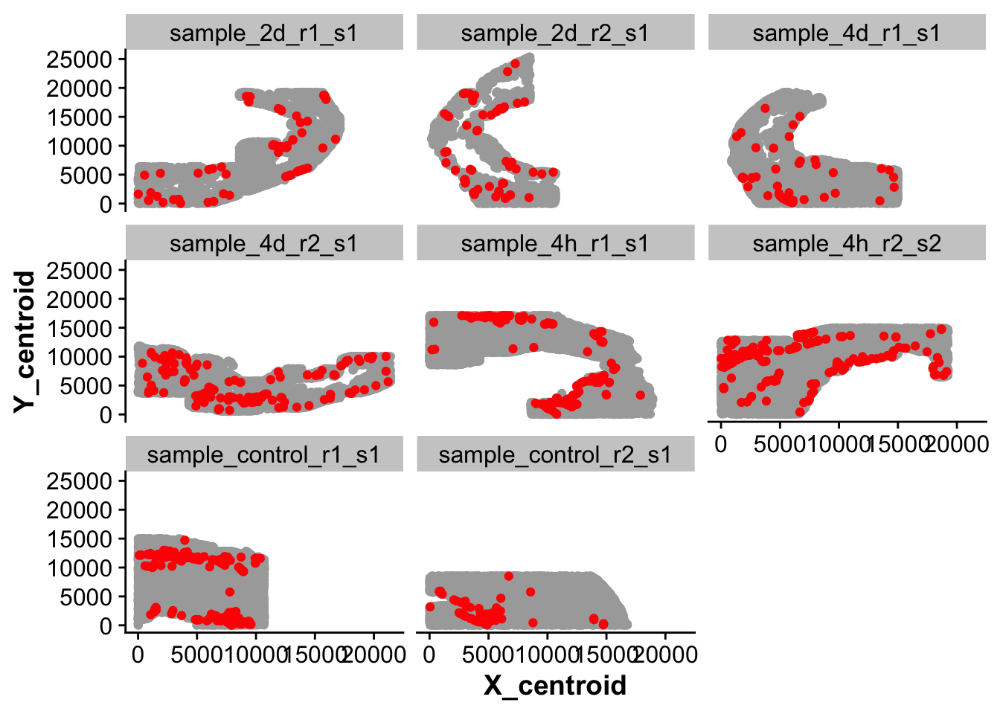
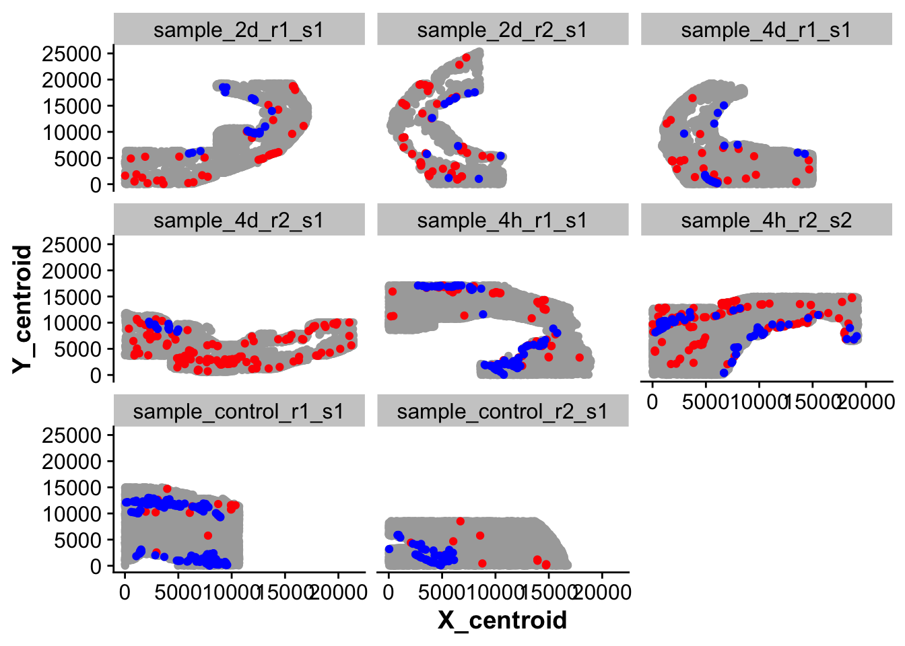
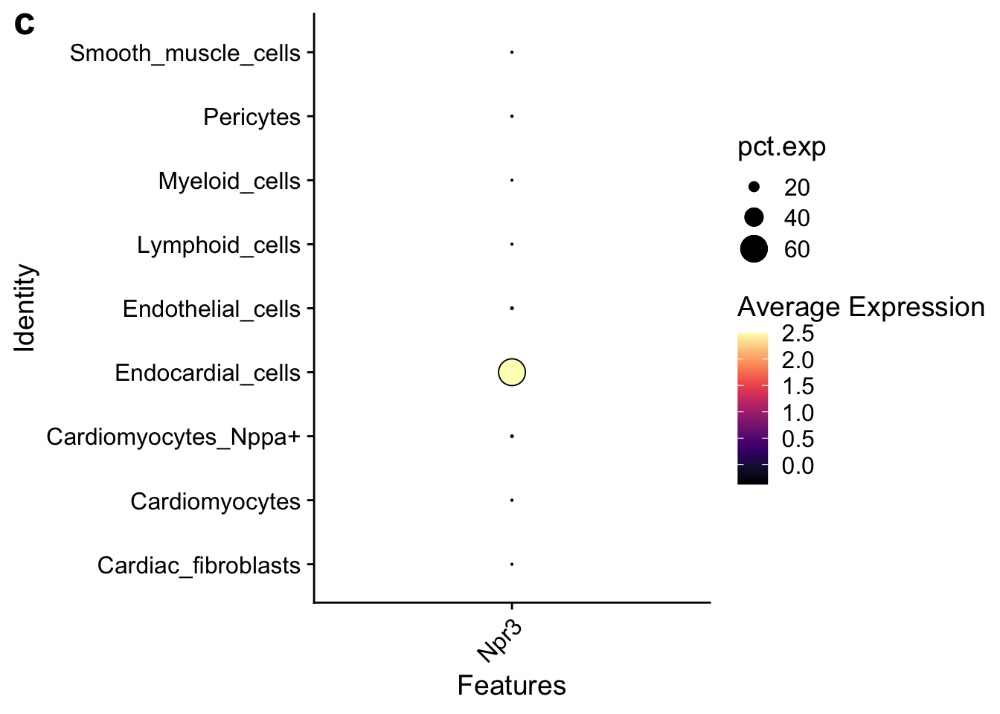

Last updated: 2025-01-22
Checks: 7 0
Knit directory: mi_spatialomics/
This reproducible R Markdown analysis was created with workflowr (version 1.7.1). The Checks tab describes the reproducibility checks that were applied when the results were created. The Past versions tab lists the development history.
Great! Since the R Markdown file has been committed to the Git repository, you know the exact version of the code that produced these results.
Great job! The global environment was empty. Objects defined in the global environment can affect the analysis in your R Markdown file in unknown ways. For reproduciblity it’s best to always run the code in an empty environment.
The command set.seed(20230612) was run prior to running
the code in the R Markdown file. Setting a seed ensures that any results
that rely on randomness, e.g. subsampling or permutations, are
reproducible.
Great job! Recording the operating system, R version, and package versions is critical for reproducibility.
Nice! There were no cached chunks for this analysis, so you can be confident that you successfully produced the results during this run.
Great job! Using relative paths to the files within your workflowr project makes it easier to run your code on other machines.
Great! You are using Git for version control. Tracking code development and connecting the code version to the results is critical for reproducibility.
The results in this page were generated with repository version f62b2bf. See the Past versions tab to see a history of the changes made to the R Markdown and HTML files.
Note that you need to be careful to ensure that all relevant files for
the analysis have been committed to Git prior to generating the results
(you can use wflow_publish or
wflow_git_commit). workflowr only checks the R Markdown
file, but you know if there are other scripts or data files that it
depends on. Below is the status of the Git repository when the results
were generated:
Ignored files:
Ignored: .DS_Store
Ignored: .Rproj.user/
Ignored: analysis/.DS_Store
Ignored: data/.DS_Store
Ignored: data/Traditional_IF_absolute_cell_counts.csv
Ignored: data/Traditional_IF_relative_cell_counts.csv
Ignored: data/seqIF_regions_annotations/
Ignored: output/.DS_Store
Ignored: output/mol_cart.harmony_object.h5Seurat
Ignored: output/molkart/
Ignored: output/proteomics/
Ignored: output/results_cts.lowres.125.sqm
Ignored: output/seqIF/
Ignored: plots/
Ignored: renv/.DS_Store
Ignored: renv/library/
Ignored: renv/staging/
Note that any generated files, e.g. HTML, png, CSS, etc., are not included in this status report because it is ok for generated content to have uncommitted changes.
These are the previous versions of the repository in which changes were
made to the R Markdown
(analysis/endocardial_cell_definition.Rmd) and HTML
(docs/endocardial_cell_definition.html) files. If you’ve
configured a remote Git repository (see ?wflow_git_remote),
click on the hyperlinks in the table below to view the files as they
were in that past version.
| File | Version | Author | Date | Message |
|---|---|---|---|---|
| Rmd | f62b2bf | FloWuenne | 2025-01-22 | wflow_publish(c("analysis/endocardial_cell_definition.Rmd", "analysis/molkart.celltype_analysis.Rmd", |
| html | f62b2bf | FloWuenne | 2025-01-22 | wflow_publish(c("analysis/endocardial_cell_definition.Rmd", "analysis/molkart.celltype_analysis.Rmd", |
| Rmd | b5f58f8 | FloWuenne | 2025-01-06 | Added dedicated analysis for endocardial cells. |
library(Seurat)Warning: package 'Seurat' was built under R version 4.3.3Loading required package: SeuratObjectWarning: package 'SeuratObject' was built under R version 4.3.3Loading required package: sp
Attaching package: 'SeuratObject'The following objects are masked from 'package:base':
intersect, tlibrary(SeuratData)
#library(SeuratDisk)
library(data.table)Warning: package 'data.table' was built under R version 4.3.3library(harmony)Warning: package 'harmony' was built under R version 4.3.3Loading required package: RcppWarning: package 'Rcpp' was built under R version 4.3.3library(here)here() starts at /Users/florian_wuennemann/1_Projects/MI_project/1_Manuscript/Review_NCVR/mi_spatialomicslibrary(tidyverse)── Attaching core tidyverse packages ──────────────────────── tidyverse 2.0.0 ──
✔ dplyr 1.1.4 ✔ readr 2.1.5
✔ forcats 1.0.0 ✔ stringr 1.5.1
✔ ggplot2 3.5.1 ✔ tibble 3.2.1
✔ lubridate 1.9.3 ✔ tidyr 1.3.1
✔ purrr 1.0.2 ── Conflicts ────────────────────────────────────────── tidyverse_conflicts() ──
✖ dplyr::between() masks data.table::between()
✖ dplyr::filter() masks stats::filter()
✖ dplyr::first() masks data.table::first()
✖ lubridate::hour() masks data.table::hour()
✖ lubridate::isoweek() masks data.table::isoweek()
✖ dplyr::lag() masks stats::lag()
✖ dplyr::last() masks data.table::last()
✖ lubridate::mday() masks data.table::mday()
✖ lubridate::minute() masks data.table::minute()
✖ lubridate::month() masks data.table::month()
✖ lubridate::quarter() masks data.table::quarter()
✖ lubridate::second() masks data.table::second()
✖ purrr::transpose() masks data.table::transpose()
✖ lubridate::wday() masks data.table::wday()
✖ lubridate::week() masks data.table::week()
✖ lubridate::yday() masks data.table::yday()
✖ lubridate::year() masks data.table::year()
ℹ Use the conflicted package (<http://conflicted.r-lib.org/>) to force all conflicts to become errorslibrary(Matrix)
Attaching package: 'Matrix'
The following objects are masked from 'package:tidyr':
expand, pack, unpacklibrary(sf)Warning: package 'sf' was built under R version 4.3.3Linking to GEOS 3.11.0, GDAL 3.5.3, PROJ 9.1.0; sf_use_s2() is TRUElibrary(sfheaders)
library(viridis)Loading required package: viridisLitesource("./code/functions.R")
Attaching package: 'cowplot'
The following object is masked from 'package:lubridate':
stampWarning: package 'ggsci' was built under R version 4.3.3## Load annotated Seurat object
seurat_object <- readRDS("./output/molkart/molkart.seurat_object.rds")Endocardial cells are very small and thin and form a monolayer at the inner lining of the heart. We noticed that our RNA marker Npr3 does not always reliably label endocardial cells and therefore will use manual annotation of the endocardial tissue regions to improve annotation of endocardial cells.
## Function to use GeoJson mask from QuPath with Seurat metadata to check cell overlap to manual annotation region
check_mask_overlap <- function(polygon_sf,metadata,img_height,anno_name){
points_sf <- st_as_sf(metadata, coords = c("X_centroid", "Y_centroid"), crs = NA)
polygon_sf <- st_set_crs(polygon_sf, NA)
mirrored_geometries <- st_geometry(polygon_sf) %>%
st_coordinates() %>%
as.data.frame() %>%
mutate("Y" = img_height - Y) %>%
select(X,Y,L2)
mirrored_geometries <- as.data.frame(mirrored_geometries)
polygon_list <- split(mirrored_geometries[,c("X", "Y")], mirrored_geometries$L2)
closed_polys <- list()
# Iterate over polygons in polygon_list and add the first row to the end of each polygon
for (i in 1:length(polygon_list)) {
closed_polys[[i]] <- as.matrix(rbind(polygon_list[[i]], polygon_list[[i]][1,]))
}
# Convert the list of polygons to sf objects
sf_objects <- lapply(closed_polys, function(polygon) {
st_polygon(list(polygon))
})
# Create a MULTIPOLYGON object
multipolygon <- st_multipolygon(sf_objects)
## Check which points fall withing the annotation
points_within_polygons <- st_within(points_sf, multipolygon, sparse = FALSE)
metadata[anno_name] <- points_within_polygons
return(metadata)
}## Check which cells fall in the spatial endocardial region for each sample
all_vals <- list()
for(sample_id in unique(seurat_object@meta.data$sample_ID)){
print(sample_id)
image_sizes <- fread("./references/molkart.image_dimensions.csv")
img_height <- subset(image_sizes,sample_ID == sample_id)$height
polygon_sf <- st_read(paste("./annotations/molkart/heart_regions_r/",sample_id,".stack.geojson",sep=""))
sample_meta <- subset(seurat_object@meta.data,sample_ID == sample_id)
sample_vals <- list(polygon_sf,sample_meta,img_height)
all_vals <- append(all_vals,list(sample_vals))
#
}[1] "sample_2d_r1_s1"
Reading layer `sample_2d_r1_s1.stack' from data source
`/Users/florian_wuennemann/1_Projects/MI_project/1_Manuscript/Review_NCVR/mi_spatialomics/annotations/molkart/heart_regions_r/sample_2d_r1_s1.stack.geojson'
using driver `GeoJSON'
Simple feature collection with 1 feature and 3 fields
Geometry type: POLYGON
Dimension: XY
Bounding box: xmin: 8566 ymin: 690 xmax: 13860 ymax: 9747
Geodetic CRS: WGS 84
[1] "sample_2d_r2_s1"
Reading layer `sample_2d_r2_s1.stack' from data source
`/Users/florian_wuennemann/1_Projects/MI_project/1_Manuscript/Review_NCVR/mi_spatialomics/annotations/molkart/heart_regions_r/sample_2d_r2_s1.stack.geojson'
using driver `GeoJSON'
Simple feature collection with 3 features and 4 fields
Geometry type: POLYGON
Dimension: XY
Bounding box: xmin: 3793 ymin: 8044 xmax: 10720 ymax: 20387
Geodetic CRS: WGS 84
[1] "sample_4d_r1_s1"
Reading layer `sample_4d_r1_s1.stack' from data source
`/Users/florian_wuennemann/1_Projects/MI_project/1_Manuscript/Review_NCVR/mi_spatialomics/annotations/molkart/heart_regions_r/sample_4d_r1_s1.stack.geojson'
using driver `GeoJSON'
Simple feature collection with 2 features and 4 fields
Geometry type: POLYGON
Dimension: XY
Bounding box: xmin: 5539 ymin: 1844 xmax: 10738 ymax: 12420
Geodetic CRS: WGS 84
[1] "sample_4d_r2_s1"
Reading layer `sample_4d_r2_s1.stack' from data source
`/Users/florian_wuennemann/1_Projects/MI_project/1_Manuscript/Review_NCVR/mi_spatialomics/annotations/molkart/heart_regions_r/sample_4d_r2_s1.stack.geojson'
using driver `GeoJSON'
Simple feature collection with 3 features and 3 fields
Geometry type: POLYGON
Dimension: XY
Bounding box: xmin: 0 ymin: 236 xmax: 17963 ymax: 6159
Geodetic CRS: WGS 84
[1] "sample_4h_r1_s1"
Reading layer `sample_4h_r1_s1.stack' from data source
`/Users/florian_wuennemann/1_Projects/MI_project/1_Manuscript/Review_NCVR/mi_spatialomics/annotations/molkart/heart_regions_r/sample_4h_r1_s1.stack.geojson'
using driver `GeoJSON'
Simple feature collection with 3 features and 3 fields
Geometry type: POLYGON
Dimension: XY
Bounding box: xmin: 2237 ymin: 5280 xmax: 15604 ymax: 17152
Geodetic CRS: WGS 84
[1] "sample_4h_r2_s2"
Reading layer `sample_4h_r2_s2.stack' from data source
`/Users/florian_wuennemann/1_Projects/MI_project/1_Manuscript/Review_NCVR/mi_spatialomics/annotations/molkart/heart_regions_r/sample_4h_r2_s2.stack.geojson'
using driver `GeoJSON'
Simple feature collection with 1 feature and 2 fields
Geometry type: POLYGON
Dimension: XY
Bounding box: xmin: 6475 ymin: 3304 xmax: 18740 ymax: 15008
Geodetic CRS: WGS 84
[1] "sample_control_r1_s1"
Reading layer `sample_control_r1_s1.stack' from data source
`/Users/florian_wuennemann/1_Projects/MI_project/1_Manuscript/Review_NCVR/mi_spatialomics/annotations/molkart/heart_regions_r/sample_control_r1_s1.stack.geojson'
using driver `GeoJSON'
Simple feature collection with 1 feature and 3 fields
Geometry type: POLYGON
Dimension: XY
Bounding box: xmin: 3748 ymin: 12539 xmax: 10117 ymax: 14892
Geodetic CRS: WGS 84
[1] "sample_control_r2_s1"
Reading layer `sample_control_r2_s1.stack' from data source
`/Users/florian_wuennemann/1_Projects/MI_project/1_Manuscript/Review_NCVR/mi_spatialomics/annotations/molkart/heart_regions_r/sample_control_r2_s1.stack.geojson'
using driver `GeoJSON'
Simple feature collection with 3 features and 3 fields
Geometry type: POLYGON
Dimension: XY
Bounding box: xmin: 0 ymin: 2591 xmax: 6300 ymax: 7736
Geodetic CRS: WGS 84#test <- check_mask_overlap(polygon_sf,sample_meta,img_height)
meta_list <- Map(function(x) check_mask_overlap(x[[1]], x[[2]], x[[3]],"in_endo"), all_vals)
# Combine all data frames into one
new_full_meta <- do.call(rbind, meta_list)## Which seurat cluster corresponds to endocardial cells (Npr3 positive)?
endocardial_cluster <- 15
## How many cells are in the endocardial cluster?
n_endo <- nrow(subset(new_full_meta,seurat_clusters == endocardial_cluster))
## How many of the transcriptionally defined endocardial cell cluster are spatially within the endocardium?
n_endo_spatial <- nrow(subset(new_full_meta,seurat_clusters == endocardial_cluster & in_endo == TRUE))
## How many segmented cells are total in the annotated regions?
anno_region_cells <- nrow(subset(new_full_meta, in_endo == TRUE))
## Let's classify cells that are Pecam1 positive within the endocardial region as endocardial (even if they are not Npr3 positive)
## add Pecam1 expression
pecam1_exp <- seurat_object@assays$SCT@data["Pecam1",]
new_full_meta$Pecam1 <- pecam1_exp
npr3_exp <- seurat_object@assays$SCT@data["Npr3",]
new_full_meta$Npr3 <- npr3_exp
## How many cells are Pecam1 positive within the endocardial region?
pecam1_pos <- subset(new_full_meta,Pecam1 > 0 & in_endo == TRUE)
## Add another annotation column to metadata to classify all cells with Pecam1 > 0 within the endocardial region as endocardial cells
new_full_meta <- new_full_meta %>%
mutate("spatial_endoc" = if_else((in_endo == TRUE & Pecam1 > 2) | (in_endo == TRUE & seurat_clusters == endocardial_cluster), TRUE,FALSE))
seurat_object@meta.data <- new_full_meta## Plot cells that are transcriptionally labeled as endocardial cells
ggplot(new_full_meta,aes(X_centroid,Y_centroid)) +
geom_point(color = "darkgrey") +
geom_point(data = subset(new_full_meta,seurat_clusters == endocardial_cluster),color = "red") +
facet_wrap(~ sample_ID)
| Version | Author | Date |
|---|---|---|
| f62b2bf | FloWuenne | 2025-01-22 |
## Plot cells that are in cluster 15 but don't express Npr3
ggplot(new_full_meta,aes(X_centroid,Y_centroid)) +
geom_point(color = "darkgrey") +
geom_point(data = subset(new_full_meta,seurat_clusters == endocardial_cluster & Npr3 == 0),color = "red") +
geom_point(data = subset(new_full_meta,seurat_clusters == endocardial_cluster & Npr3 > 0),color = "blue") +
facet_wrap(~ sample_ID)
| Version | Author | Date |
|---|---|---|
| f62b2bf | FloWuenne | 2025-01-22 |
## Plot
## 1: blue - originally transcriptionally labeled endocardial cells but not in endocardial region.
## 2: red - transcriptionally labeled endocardial cells that were in endocardial region
## 3: purple - Cells that were not clustered with Npr3 positive cells but spatially fall within endocardium and are Pecam1 or Npr3 positive.
endocardial_spatial_annotation <- ggplot(new_full_meta,aes(X_centroid,Y_centroid)) +
geom_point(color = "darkgrey", size = 0.5) +
geom_point(data = subset(new_full_meta,spatial_endoc == TRUE & seurat_clusters == endocardial_cluster),color = "yellow", size = 0.5) +
geom_point(data = subset(new_full_meta,spatial_endoc == TRUE & seurat_clusters != endocardial_cluster),color = "purple", size = 0.5) +
geom_point(data = subset(new_full_meta,spatial_endoc == FALSE & seurat_clusters == endocardial_cluster),color = "blue", size = 0.5) +
facet_wrap(~ sample_ID)
save_plot(endocardial_spatial_annotation,
file = "./plots/molkart.endocardial_spatial_annotation.png",
base_height = 6)new_seurat_object <- seurat_object
new_seurat_object@meta.data <- new_seurat_object@meta.data %>%
mutate("anno_cell_type_lvl2" = if_else(spatial_endoc == TRUE & anno_cell_type_lvl2 == "Endocardial_cells","Endocardial_cells",
if_else(spatial_endoc == TRUE & anno_cell_type_lvl2 != "Endocardial_cells","Endocardial_cells",
if_else(spatial_endoc == FALSE & anno_cell_type_lvl2 == "Endocardial_cells","Endothelial_cells",anno_cell_type_lvl2))),
"anno_cell_type_lvl3" = if_else(spatial_endoc == TRUE & anno_cell_type_lvl3 == "Endocardial_cells_Npr3","Endocardial_cells_Npr3",
if_else(spatial_endoc == TRUE & anno_cell_type_lvl3 != "Endocardial_cells_Npr3","Endocardial_cells_Npr3",
if_else(spatial_endoc == FALSE & anno_cell_type_lvl3 == "Endocardial_cells_Npr3","Lymphatic_endothelial_cells_Lyve1",anno_cell_type_lvl3))))
## Plot a dotplot of Npr3 across all cell types
library(viridis)
endocardial_cells_dotplot <- DotPlot(new_seurat_object,
features = c("Npr3"),
group.by = "anno_cell_type_lvl2") +
RotatedAxis() +
scale_colour_viridis(option="magma") +
geom_point(aes(size=pct.exp), shape = 21, colour="black", stroke=0.5) +
guides(size=guide_legend(override.aes=list(shape=21, colour="black", fill="black"))) +
labs(tags = "c") + theme(plot.tag = element_text(size = 20, face = "bold"))Warning: The following variables were found in both object meta data and the default assay: Npr3
Returning meta data; if you want the feature, please use the assay's key (eg. sct_Npr3)Scale for colour is already present.
Adding another scale for colour, which will replace the existing scale.endocardial_cells_dotplot
| Version | Author | Date |
|---|---|---|
| f62b2bf | FloWuenne | 2025-01-22 |
save_plot(endocardial_cells_dotplot,
file = "./plots/molkart.endocardial_dotplot.png",
base_height = 4)
sessionInfo()R version 4.3.1 (2023-06-16)
Platform: aarch64-apple-darwin20 (64-bit)
Running under: macOS Sonoma 14.1.2
Matrix products: default
BLAS: /Library/Frameworks/R.framework/Versions/4.3-arm64/Resources/lib/libRblas.0.dylib
LAPACK: /Library/Frameworks/R.framework/Versions/4.3-arm64/Resources/lib/libRlapack.dylib; LAPACK version 3.11.0
locale:
[1] en_US.UTF-8/en_US.UTF-8/en_US.UTF-8/C/en_US.UTF-8/en_US.UTF-8
time zone: America/Toronto
tzcode source: internal
attached base packages:
[1] stats graphics grDevices datasets utils methods base
other attached packages:
[1] RColorBrewer_1.1-3 ggsci_3.2.0 cowplot_1.1.3
[4] viridis_0.6.5 viridisLite_0.4.2 sfheaders_0.4.4
[7] sf_1.0-19 Matrix_1.6-5 lubridate_1.9.3
[10] forcats_1.0.0 stringr_1.5.1 dplyr_1.1.4
[13] purrr_1.0.2 readr_2.1.5 tidyr_1.3.1
[16] tibble_3.2.1 ggplot2_3.5.1 tidyverse_2.0.0
[19] here_1.0.1 harmony_1.2.3 Rcpp_1.0.13-1
[22] data.table_1.16.2 SeuratData_0.2.2.9001 Seurat_5.1.0
[25] SeuratObject_5.0.2 sp_2.1-4 workflowr_1.7.1
loaded via a namespace (and not attached):
[1] rstudioapi_0.17.1 jsonlite_1.8.9 magrittr_2.0.3
[4] spatstat.utils_3.1-1 farver_2.1.2 rmarkdown_2.29
[7] ragg_1.3.3 fs_1.6.5 vctrs_0.6.5
[10] ROCR_1.0-11 spatstat.explore_3.3-3 htmltools_0.5.8.1
[13] sass_0.4.9 sctransform_0.4.1 parallelly_1.40.0
[16] KernSmooth_2.23-22 bslib_0.8.0 htmlwidgets_1.6.4
[19] ica_1.0-3 plyr_1.8.9 plotly_4.10.4
[22] zoo_1.8-12 cachem_1.1.0 whisker_0.4.1
[25] igraph_2.1.1 mime_0.12 lifecycle_1.0.4
[28] pkgconfig_2.0.3 R6_2.5.1 fastmap_1.2.0
[31] fitdistrplus_1.2-1 future_1.34.0 shiny_1.9.1
[34] digest_0.6.37 colorspace_2.1-1 patchwork_1.3.0
[37] ps_1.8.1 rprojroot_2.0.4 tensor_1.5
[40] RSpectra_0.16-2 irlba_2.3.5.1 textshaping_0.4.0
[43] labeling_0.4.3 progressr_0.15.1 timechange_0.3.0
[46] fansi_1.0.6 spatstat.sparse_3.1-0 httr_1.4.7
[49] polyclip_1.10-7 abind_1.4-8 compiler_4.3.1
[52] proxy_0.4-27 withr_3.0.2 DBI_1.2.3
[55] fastDummies_1.7.4 MASS_7.3-60 rappdirs_0.3.3
[58] classInt_0.4-10 units_0.8-5 tools_4.3.1
[61] lmtest_0.9-40 httpuv_1.6.15 future.apply_1.11.3
[64] goftest_1.2-3 glue_1.8.0 callr_3.7.6
[67] nlme_3.1-163 promises_1.3.2 grid_4.3.1
[70] Rtsne_0.17 getPass_0.2-4 cluster_2.1.4
[73] reshape2_1.4.4 generics_0.1.3 gtable_0.3.6
[76] spatstat.data_3.1-4 tzdb_0.4.0 class_7.3-22
[79] hms_1.1.3 utf8_1.2.4 spatstat.geom_3.3-4
[82] RcppAnnoy_0.0.22 ggrepel_0.9.6 RANN_2.6.2
[85] pillar_1.9.0 spam_2.11-0 RcppHNSW_0.6.0
[88] later_1.4.1 splines_4.3.1 lattice_0.22-5
[91] renv_1.0.3 survival_3.5-7 deldir_2.0-4
[94] tidyselect_1.2.1 miniUI_0.1.1.1 pbapply_1.7-2
[97] knitr_1.49 git2r_0.35.0 gridExtra_2.3
[100] scattermore_1.2 xfun_0.49 matrixStats_1.4.1
[103] stringi_1.8.4 lazyeval_0.2.2 yaml_2.3.10
[106] evaluate_1.0.1 codetools_0.2-19 BiocManager_1.30.25
[109] cli_3.6.3 uwot_0.2.2 systemfonts_1.1.0
[112] xtable_1.8-4 reticulate_1.40.0 munsell_0.5.1
[115] processx_3.8.4 jquerylib_0.1.4 globals_0.16.3
[118] spatstat.random_3.3-2 png_0.1-8 spatstat.univar_3.1-1
[121] parallel_4.3.1 dotCall64_1.2 listenv_0.9.1
[124] e1071_1.7-16 scales_1.3.0 ggridges_0.5.6
[127] crayon_1.5.3 leiden_0.4.3.1 rlang_1.1.4